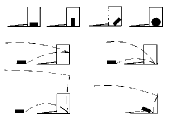
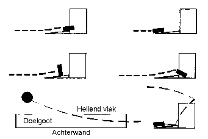

Om een geldig doelpunt te hebben moet de puck, reglementair met de stick gespeeld, zich volledig in de doelkolom hebben bevonden en bovendien contact hebben gemaakt met de achterwand of de bodem. De waterscheidsrechter steekt 2 handen in de lucht in de richting van de goal waar het doelpunt werd gemaakt. Zolang de scheidsrechter dit teken niet maakt, speel je door: als de scheidsrechter het doelpunt niet heeft gezien, telt het ook niet.
Dit zijn een aantal puckbewegingen die aanleiding geven tot een geldig doelpunt:
De volgende situaties zijn geen geldige doelpunten:
De eerste vier situaties zijn ongeldig omdat de puck niet volledig in de doelkolom is geweest, hoewel in het laatste geval wel de onderkant van de doelgoot werd geraakt. De onderste twee tekeningen tonen een situatie waarbij de puck tegen de wand van het zwembad afketst, wel volledig door de doelkolom gaat maar niet de onderkant noch de achterkant van de doelbak raakt. Ook dit is dus geen doelpunt.
SPEEL DUS DOOR als een van deze situaties zich voordoet.